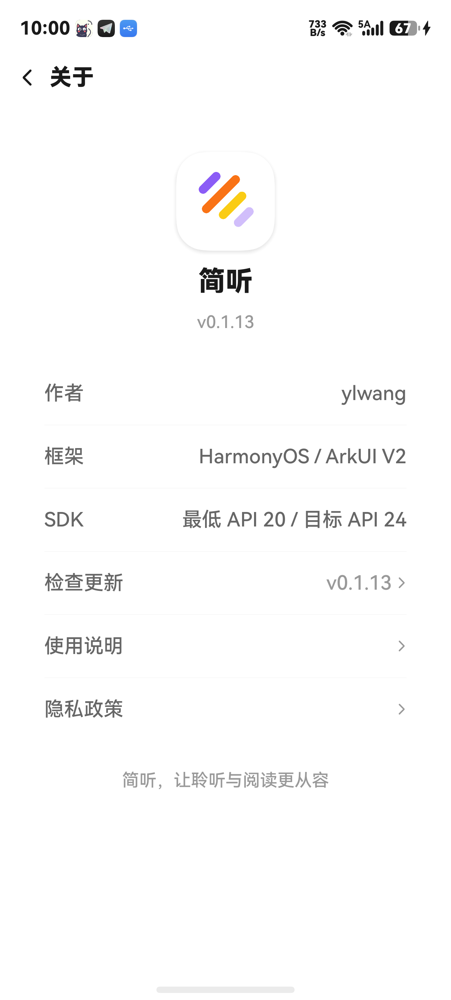
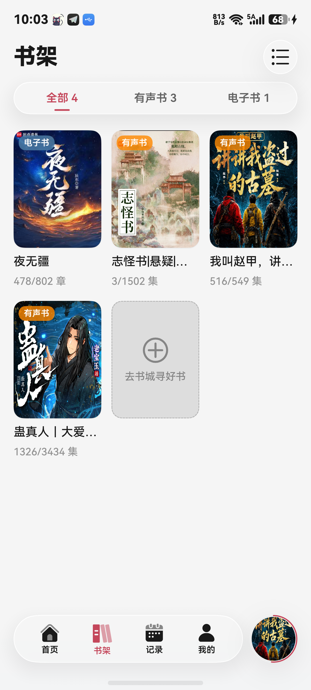
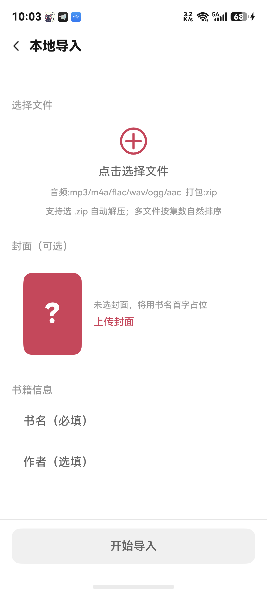
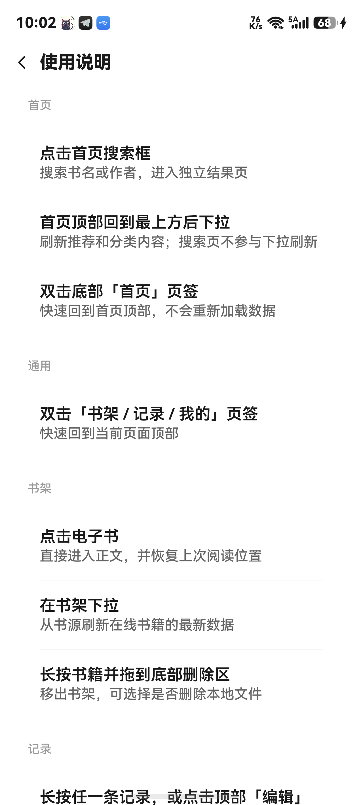

简听
随心收听，静心阅读
关于简听
简听是一款面向 HarmonyOS 手机的音频收听与小说阅读应用。导入自己的书源、本地音频或电子书，将想听、想读的内容收进书架，按自己的节奏继续。
【整理自己的内容】 支持导入书源文件、链接和二维码，按名称、分组和状态管理书源；也可导入本地音频、TXT、EPUB、HTML/HTM 及 ZIP，在一个应用中整理收听和阅读内容。
【自在收听】 支持章节切换、播放进度恢复、倍速调节、片头片尾跳过与睡眠定时。锁屏后可继续播放，并通过系统媒体控制或桌面卡片操作。
【舒适阅读】 支持分段章节目录、阅读位置恢复，以及字号、行高、边距、翻页方式和阅读背景设置；可选择纯黑主题、自定义图片和状态栏显示方式，让阅读习惯延续下来。在线小说还支持系统离线朗读，可调节音色与语速，跟随高亮继续听读。
【收藏与离线】 通过书架收藏内容，查看收听记录；可下载支持下载的音频章节，并将已完成的章节导出到自己选择的位置。
使用说明：简听不内置可直接使用的在线书源，在线搜索、阅读和收听需要你自行导入合法可用的书源；首页推荐和分类取决于已启用书源的支持情况。本地音频和电子书可通过文件导入使用，EPUB 按文字章节阅读。第三方内容的可用性及访问条件由对应服务决定，请在获得许可的范围内使用。
应用截图



